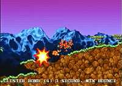

|

Review

Game Type: Strategy
Much like Lemmings except that you control each of your four worms
individually, one at a time. Your goal is to take out as many as four other
teams of worms before they get you. Many different weapons and tools are
available, and are used in a style similar to Artillery Duel, where you
must adjust the angle and power of your shot to try and hit your target.
Gameplay: 90/100
I'll make it clear now - don't even consider this game unless at least
one of your friends is into strategy games. It's miserable as a one player
game, as the computer AI is awful and tries to make up for it by making
impossible shots (usually successfully). But unless your friends have a
strictly-action mentality, it shouldn't be hard to convince them to play.
The game moves along at a very speedy pace, and is easy to learn.
But best of all, the game is quite literally a laugh a minute. Lay a
stick of dynamite in the right spot and worms will fly in every direction.
Dragon punch (they even squeak 'shoryuken') a worm into a field of land
mines and watch the explosions bounce him about. Or, for the ultimate
insult, walk up behind a worm at the edge of a cliff and lightly push him
off into the water (or lava, or toxic sludge) below. Get four friends
together and you'll have the biggest guffaw you've had in ages.
Graphics: 50/100
No fancy polygons here, just 2D parallaxing backgrounds and tiny
character sprites. Just as well, 3D graphics would be inappropriate for
this type of game (as Lemmings 3D proved so well). The camera can scale
out where necessary to follow the action. The backgrounds look
nice but there are very few background types and since they're randomly
generated they all start to look alike after a while, probably
the game's biggest flaw.
Sound: 70/100
Probably the best part of the audio is the samples of the worms'
squeaky voices. They yelp, shout epithets at each other, urge the player
to hurry up, and more. The music is decent, too, but quiet, slow tempo,
and very unobtrusive. (The mad laughter while fighting in Hell is creepy,
a very nice touch.) Aside from that there's little to distinguish the
game's sound, with weak explosions and other effects.
Overall: 90/100
I cannot recommend Worms strongly enough to anyone looking for a
four player game, especially since you don't have to have a multitap
(you just use one controller and hand it off to the next player). With
over twenty weapons and countless ways to use each, the game offers
excellent depth and yet maintains a simple interface. You have to be
sick to enjoy killing off cute little worms, but hey, laughter is the
best medicine.
Codes
- Instant Bananna Bombs, Sheep, and Minigun
- Enter the Weapon Options screen and without highlighting anything
press X, S, S, X, S, S, X, S, S. Certain menu options will change to
reflect the newly available weapons.
|